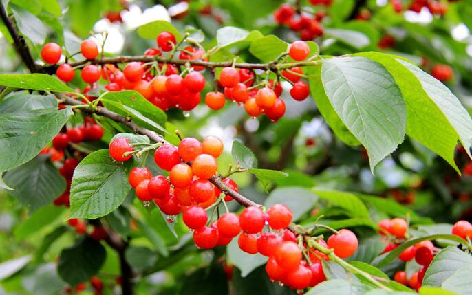

关于樱桃你需要知道的一切
在中国，做消费者是种修行，尤其是关于吃，我们关于植物动物化学的知识远超发达国家消费者。同时每年都会有不少朋友问关于樱桃的很多问题，红的黄的紫的进口的国产的人家送的自己摘的贵的便宜的。但是这些问题大多重复。以下是自己的经验还有一些和种樱桃的朋友聊天得来的知识，可能有些不对，可能有些不全，但肯定有些是有用的。樱桃是种好水果，值得你认真的吃一吃。以下资料可供参考：

一、樱桃核有毒吗？
很不幸，呵呵，樱桃核确实有毒。但幸运的是，有毒的是樱桃核的仁儿，杏仁见过吧？就是把杏核坚硬的外壳去掉，里面那个白色的心形的东西。樱桃核仁儿的毒性极微，要5斤樱桃核才能中毒，大概要吃2500个樱桃核吧。樱桃核多硬你知道吗？叔讲通俗些，牙口不好的人想咬碎樱桃核，通常的结果是牙掉了，樱桃核笑了。所以，有毒，小小的毒，完全不用理的毒，请放肆的吃。
二、樱桃里有虫吗？
很不幸，呵呵，樱桃确实有虫，什么虫？蛆虫，果蝇的孩子。但生活在樱桃中的蛆，和厕所蛆可不是一回事儿，蛆虫界的白富美，白白嫩嫩干干净净的，富含蛋白质，进到胃里就被胃酸完全消灭了，对人身体完全无害，叔吃樱桃时候都咬一口看看有没有虫，变态吧？哈哈。实在觉得恶心，你就拿盐水泡泡，十分钟足够了。另外，绝大多数的蔬果里都有虫或虫卵，没啥，真没啥，对身体完全无害，请大胆的吃。
三、樱桃全靠农药泡？
大家信这个，叔特能理解，咱们都被毒这个毒那个给整怕了。樱桃的用药问题有些复杂，但相对而言属于用药很少的水果，因为樱桃的成熟期短，在害虫肆虐前完成了生育。樱桃的虫害很少，但近年有些产区由于土壤酸化，导致有害菌类繁殖迅速，需要打药灭菌抗菌。有些产区有害菌问题就很少，所以农药使用也非常少。基本上来说，樱桃属于用药很少的水果，全靠农药泡的说法不靠谱，当然，从树上摘下来就吃叔是不建议的，吃之前多洗几次就是了，请洗洗就吃吧。
四、樱桃都用激素膨大剂
叔发现，咱们民族啥都喜欢大的，苹果喜欢大的，枣喜欢大的，猕猴桃喜欢大的，车子喜欢大的，房子喜欢大的，女朋友喜欢大的。樱桃这东西，大的确实比小的贵。膨大剂其实就是激素，确实有用这个的，大棚里的樱桃通常使用较多，露天樱桃使用较少。要我说，樱桃这东西，个头小的味道不一定差，主要还是吃个好吃。如果不想吃到激素樱桃，就别买大棚樱桃，等露天樱桃批量上市后再买就是了，基本上五月中旬露天樱桃就大批上市了，再往前的大棚樱桃居多。叔知道你很馋，多忍几天呗。
五、连体樱桃是激素产生的异形？
叔上中学时候生物最好了，这种情况真不是激素，一株花里有两个雌蕊，都授粉了，结出果实就是双胞胎喽，纯天然，纯自然，纯属巧合，和激素无关。另外，大家不是喜欢心形的物件吗？这樱桃辛辛苦苦长给你们看，到最后又嫌弃人家，哼！
六、樱桃不行，还是国外的车厘子好吃又牛逼？
车厘子不比樱桃牛逼，致命的原因在于车厘子和樱桃就是一种东西，你可以说金角大王比银角大王牛逼，但不存在金角大王比金角大王牛逼的命题。
车厘子是对樱桃“cherry”的音译。进口樱桃基本上是欧洲甜樱桃的种，个头大，皮厚，甜度高，也只有这样的樱桃进到国内市场才好卖，才好保鲜。
国内的樱桃也有很多品种，红灯、黄蜜、美早、红艳，早红，雷尼、斯坦、先锋，大紫拉宾斯、龙冠，早大果，那翁等，样子和口味各异，估计这里面有重复的，各个产区命名差异太大了。
七、去日本赏樱花，顺便摘点樱桃吃吧？
不要像叔一样露怯哦，赏樱花的那种树和我们吃的樱桃那种树可不一样，这要涉及到什么什么樱属，什么蔷薇科的问题，叔不懂，也不扯了。你只要知道樱桃树和樱花树都会开花（这不是废话），但我们吃的樱桃并不是你组团去看的那种樱花的果实这一点就够了。观赏性樱花结出的果实大多小而涩，鸟雀都要嫌弃。
八、哪里的樱桃最好吃？
这个问题太难了，我答不上来。好吃这事儿吧，太主观，有人就喜欢吃又大又甜的，有人就喜欢吃酸的。说说我自己吧，樱桃这种水果，我的首要要求是新鲜，刚从树上摘下的红樱桃，黄樱桃，用冰水洗洗，放在嘴里咬一口，能吃出春天的味道。第二要求是酸度和甜度都要够高，酸甜才可口吗，太甜的容易腻，太酸的大脑不喜欢。我国的樱桃产地广泛，山东、辽宁、河北、陕西、甘肃、山东、河南、江苏、浙江、江西、四川都有大面积种植。
樱桃怎么清洗？
各种洗水果的方法也是网上每年都要爆炒的话题，淘米水、盐水、茶籽粉、面粉等。洗樱桃呢，最主要还是注意两点：1、不要摘蒂清洗。这样容易让洗出的污染物通过开口侵入樱桃内部。 2、用盐水泡确实可以析出小虫和虫卵，但注意不要泡太久，控制在十五分钟以内，否则盐的浓度过高，容易破壁让水中的杂质侵入樱桃。反正我自己的话，从来不泡，蛋白质都给泡出去了。
网购樱桃怎么选？
樱桃电商如火如荼，最赚钱的还是顺丰，一单樱桃顺丰就要收走三四十块钱。网购樱桃需要注意什么呢？叔的经验之谈，第一，别买价格太低的，几块钱一斤还包邮的，用膀胱看都知道是假的，如果图便宜，去菜市场才是最好的选择。在网上买樱桃，选三十块钱一斤以上的，品质是比较有保障的。第二，注意损耗，樱桃娇嫩，到手都会有些损耗，说白了就是有些会烂了，软了，如果有三五个就算了，没必要再去找客服索赔，干啥都不容易，如果十个以上，记得拍照去退款。第三，我国的泡沫箱绝大多数都是有问题的，会让你网购的樱桃有一股奇怪的味道，所以网购的樱桃不可以立刻吃，要倒出来通风两小时以上，再洗，再吃。第四，如果樱桃已经蔫了，不新鲜了，可以用冰水泡个15分钟，效果和ps类似。
 上一篇
上一篇